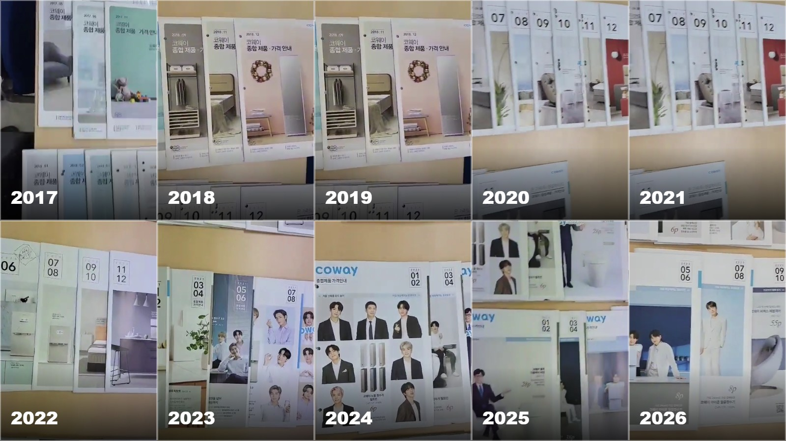

하나의 선으로 이어지는 과정
상담부터 설치 이후까지
경로가 연결됩니다
사용 장소와 인원을 확인합니다.
기능과 관리 방식을 비교합니다.
배관, 전기, 설치 동선을 살핍니다.
사용과 관리 문의를 안내합니다.
특징: 현재 사이트와 가장 자연스럽게 연결되는 단정한 기업형 디자인입니다.
실제 카탈로그 기록과 연도 축을 배경에 반복해
깔끔하지만 심심하지 않은 흐름을 만듭니다.

상담 일정과 현장 기록을 짧은 날짜 표기로 연결합니다.
실제 사진을 증거 자료처럼 배치해 신뢰를 강화합니다.
사용 장소와 인원을 확인합니다.
기능과 관리 방식을 비교합니다.
배관, 전기, 설치 동선을 살핍니다.
사용과 관리 문의를 안내합니다.

우리 집 공간과 가족의 사용 습관을 먼저 봅니다.
높은 배관과 설치 동선을 사진으로 확인합니다.
설치 대수와 장소, 결제 조건을 구분합니다.